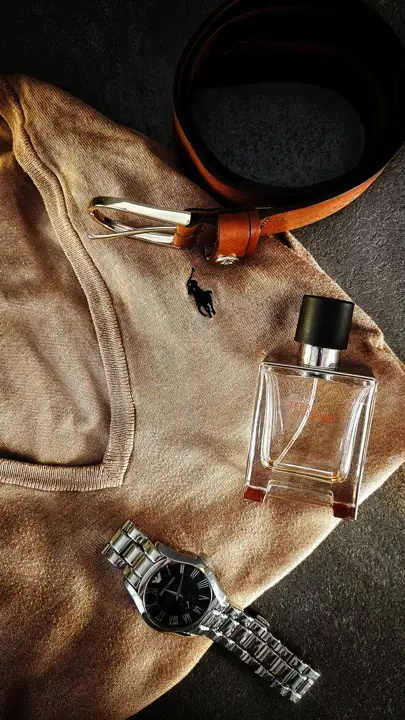
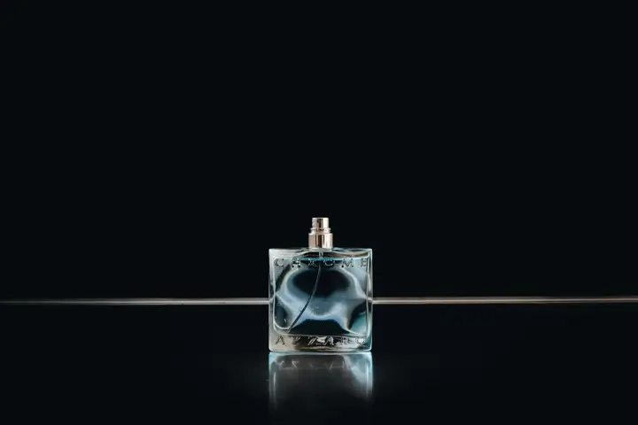

Christmas Gifts for Him UK: Useful Presents He’ll Actually Use
Ad: As an Amazon Associate I earn from qualifying purchases. Links on this page are affiliate links, so I may earn a commission if you buy, at no extra cost to you. More info.
Buying for a boyfriend, husband, brother or mate who says he “doesn’t need anything”? These are the gifts that get used rather than shoved in a drawer.
Lifestyle photo (not the product): Pexels
1. Shower steamers gift set
A relaxing little upgrade to his morning shower that most men would never buy for themselves. Great for the bloke who’s always stressed or knackered after work.
View on Amazon UK
Lifestyle photo (not the product): Pexels
2. Solid cologne set for men
Solid cologne slips into a jacket pocket or gym bag with no risk of leaks. A smart pick for someone who travels, or who you suspect is still using the aftershave from 2019.
View on Amazon UKLifestyle photo (not the product): Pexels
3. Rechargeable hand warmers
Pocket hand warmers that charge by USB, so no fiddly disposables. Ideal for dog walkers, football dads on the touchline and anyone with a cold commute.
View on Amazon UK
Lifestyle photo (not the product): Unsplash
4. Men's aftershave gift set (4 pack)
A four-bottle fragrance set lets him try different scents for work, weekends and nights out. Easy win for a partner or teenage son.
View on Amazon UK5. 22-in-1 ratchet screwdriver
A chunky multi-bit ratchet screwdriver lives in the kitchen drawer and gets used weekly. Perfect for the practical type who’s always borrowing tools.
View on Amazon UKLifestyle photo (not the product): Pexels
6. Mr Wilman's Motoring Adventure (book)
Richard Hammond’s and Jeremy Clarkson’s long-time producer telling the stories behind Top Gear and The Grand Tour. A no-brainer for anyone who watched those shows every Sunday.
View on Amazon UKLifestyle photo (not the product): Pexels
7. LED light-up gloves
Daft, bright and genuinely handy for cycling or walking in the dark. Brilliant as a funny add-on gift or for the lad who loves a gadget.
View on Amazon UK8. Magnetic fidget pen
A satisfying desk fidget that’s also a working pen. Suits office workers, students and anyone who clicks pens in meetings.
View on Amazon UKLifestyle photo (not the product): Pexels
9. Carbon fibre key fob strap
A smart carbon-look strap that makes car keys feel more premium. A thoughtful small gift for someone who’s just bought a new car.
View on Amazon UK